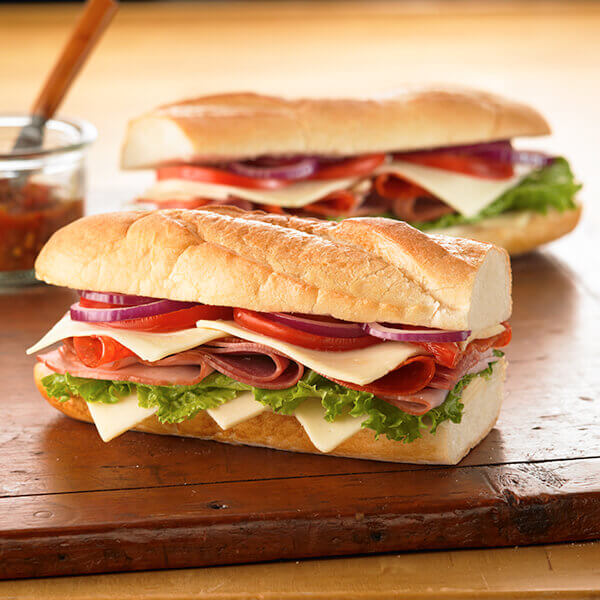

Home
Italian sub

Description
This is an Italian sandwich sub with three kinds of meat and provolone cheese. The kind you get in a mom-and-pop pizza joint. You'll be glad you tried it!
Ingredients
- 1 head red leaf lettuce, rinsed and torn
- 2 medium fresh tomatoes, chopped
- 1 medium red onion, chopped
- 6 tablespoons olive oil
- 2 tablespoons white wine vinegar
- 2 tablespoons chopped fresh parsley
- 2 cloves garlic, chopped
- 1 teaspoon dried basil
- ¼ teaspoon red pepper flakes
- 1 pinch dried oregano/li>
- ½ pound sliced Capacola sausage
- ½ pound thinly sliced Genoa salami
- ¼ pound thinly sliced prosciutto
- ½ pound sliced provolone cheese
- 4 submarine rolls, split
- 1 cup dill pickle slices
Steps
- Combine lettuce, tomatoes, and onion in a large bowl.
- Whisk together olive oil, vinegar, parsley, garlic, basil, red pepper flakes, and oregano in a medium bowl until well combined. Pour over salad and toss to coat evenly. Place in the refrigerator for flavors to meld, about 1 hour.
- Spread submarine rolls open, then layer capicola, salami, and prosciutto evenly on each roll. Top with provolone cheese. Cover with salad and pickle slices. Close rolls to serve.